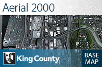

King County Standard Basemap
KC Aerial 2021 with Labels
KC Aerial 2019 with Labels
KC Aerial 2017 with Labels
KC Aerial 2015 with Labels
KC Aerial 2013 with Labels
KC Aerial 2012 with Labels
King County Aerial 2000

National Geographic Style Map

Human Geography Dark Map

Human Geography Map

Streets

Oceans

Light Gray Canvas

Imagery Hybrid